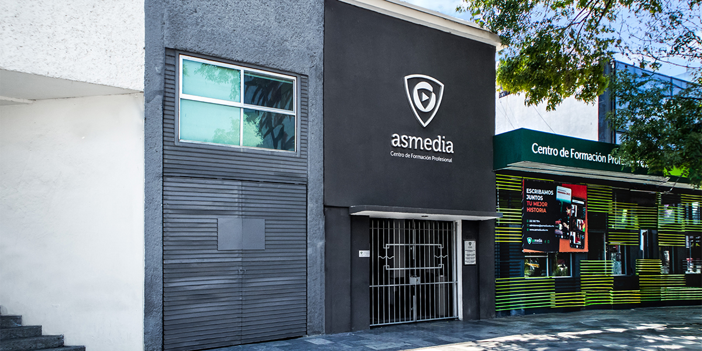

Muy buenas tardes, somos Dante Miranda y José Ángel Soriano de parte de Cátedra Nueve, y tenemos en esta oportunidad el enorme gusto de tenerlo, muy buenas tardes ¿Cómo se encuentra?
Bien, a todo dar. Muy a gusto de estar en Cátedra Nueve.
En su casa, en su casa. Ok, usted que es una persona empresarial, de telecomunicaciones, que es competitiva, queremos saber un poco de su trasfondo hablar sobre usted. Si nos remontamos a su niñez, ¿Cómo se veía usted? ¿Cuál es el sueño que usted tenía proyectado a ser “de grande”?
Bueno a mí me gustaban mucho los deportes, yo jugaba muy bien football, y se me hubiera antojado dedicarme al football profesional, no se dio. Jugué tercera división en Jalapa, Veracruz donde soy, donde nací, jugué muy bien tenis y todos los deportes en general. Era un chavo muy deportista, y por lo mismo de los deportes, muy competitivo. Me gustaba competir y me gustaba ganar. No soportaba perder.
Claro, entonces de cierta manera podría decirse que siempre atinó a ganar. En ese sentido ¿Alguna vez imaginó, en el mundo de los deportes, o fuera del mundo de los deportes, escalar tanto como lo ha hecho hasta ahora?
No, yo creo que de chavo no tienes ni idea de a dónde va air el camino de tu vida, yo más bien era deportista, me gustaba la competencia, no creas que me gustaba mucho estudiar, no era algo como mi valor más importante, era medio flojo en la escuela, trataba yo de cumplir en la escuela con lo que se tenía, pero nunca fui un alumno de dieces ni mucho menos, al contrario, era yo un chavo muy competitivo en todo pero, crecí en un barrio fuerte, grueso, de mucha vida y mucha necesidad, con gente muy agresiva. Entonces la competencia vivida tenía que ver con los deportes y en sobrevivir también en el entorno en el que estaba. Pero no, de chavo no tienes claro qué vas a ser ni en dónde vas a estar. Yo si empecé muy chavo a interesarme en cosas que tenían que ver con la comunicación porque mi padre era periodista, era locutor, y entonces mi vida de chavo, en mi casa siempre había gente que tenía que ver con la comunicación o con la política, y yo empecé a escribir cuentos muy chavito, desde los siete u ocho años, entonces me interesaba mucho el tema de escribir bien. En mi casa el tema del lenguaje, el uso de escritura, de hablar bien, correctamente, del no tener faltas de ortografía, era una exigencia misma de mi propia casa, del entorno donde me desarrollé. Entonces, publiqué algunos de esos cuentos, muy chiquito, en un periódico de “Nacional”, se llamaba: novedades de México, ya no existe, y mi papá era corresponsal de ese mismo periódico, entonces tuve la oportunidad de que me publicaran en un segmento de niños que se llamaba: Mi periodiquito; pude publicar un par de esos cuentos, cuentos de niños, que hablaban del perro o del gato… del sol, de la alberca, el deporte. Entonces desde muy chavito me empecé, justo, a orientar a lo que quería hacer, un poco por imitación de lo que veía yo en mi casa. Yo nunca dudé qué quería estudiar o a qué me quería dedicar. Nunca pensé en ser médico ni astronauta, ni bombero, ni nada. Yo quería hacer una carrera en los medios de comunicación.
Claro, usted lo dice, el entorno en el que se desarrolló demandaba cierto carácter y por lo que estamos viendo siempre tuvo la iniciativa en los medios de comunicación, en la parte escrita y oral. Y por supuesto, muchos de nosotros queremos ser footballistas, astronautas, bomberos, sin embargo es una sorpresa bastante grata escuchar esto de su parte. Tenemos entendido que estudió algo referente al periodismo y administración de empresas, ¿Cierto?
Sí, yo estudié periodismo en una escuela en la Ciudad de México, que se llamaba la carrera: periodismo y arte en radio y televisión. Realmente el tema de la administración de empresas y el estar metido en cuestiones empresariales y de negocios vino mucho después. Primero empecé a trabajar, mi primer trabajo formal en los medios de comunicación, estaba yo en segundo de secundaria, y como a mi casa venían todo el tiempo amigos y colegas de mi papá, periodistas, un día fui a ver a Orlando García Ortiz, que era el director de “El Sol” veracruzano, como El Sol de Puebla aquí, era también una organización editorial mexicana, del mismo grupo, y fui a ver a Orlando que era el director y le dije que yo quería ser reportero. Y me dijo: ¿Ya sabe tu papá que estás aquí? Le respondí: “No, si le digo, me va a decir que no” - Y ¿Por qué me vienes a ver a mí? - Porque tú eres mi tío y me vas a ayudar a ser reportero. Entonces entré a esa edad, al área de sociales, que normalmente es el área más fea de un periódico, tienes que cubrir “quince años” y otra cosa así, y ahí me inicié. La idea que saliera yo a reportear, hacía yo foto, iba con un fotógrafo conmigo y cubría yo osas de tipo social, eso en secundaria, y me quedé en ese periódico hasta terminar la prepa y en el propio periódico pasé del área sociales a deportes, de deportes a nota roja, y de nota roja a información general, que es la primera sección del periódico donde ya empiezas a tener algo de importancia y peso en un medio de comunicación y, de todos modos estaba muy chavo, porque tenía 16 o 17 años cuando entré a información general. En esos tiempos, a diferencia de lo que hacen ustedes en “diseño multimedia”, en esos tiempos los periódicos eran muy artesanales, entonces los mismos reporteros teníamos la obligación de formar planas del periódico. Cuando estaba yo en deportes, tenía que escribir, escoger mis fotos, hacer cabezas y pies de foto, cosas que le tocaban a los de redacción, pero también había unas hojas donde tenías que diagramar la formación de la plana que te tocaba, entonces tu “diseñabas”, sin tener idea de diseño, tu proponías cómo debía verse las planas que te tocaban armar. En aquél entonces cuando estaba yo en deportes, el toro Valenzuela estaba triunfando en Los dodgers de Los Ángeles, y Hugo Sánchez jugaba en el atlético de Madrid; como era parte del periódico de la Organización Editorial Mexicana, había un telefax que iba mandando información poco a poco desde El Sol de México, información que tú podías tomar para tus propias planas. Pero si yo me esperaba a que terminara un partido de Toro Valenzuela a las ocho de la noche en Los Ángeles, atrasaba yo toda la edición del periódico, entonces prefería ver el partido y aventarme yo la nota antes de que llegara la del Sol de México, porque inclusive el telefax se tardaba horas en llegar y podía inclusive hasta interrumpirse porque las comunicaciones entonces eran terribles, no habían ni computadoras ni internet ni los recursos de ahora. Entonces yo me aventaba mis notas y trataba de terminarlas antes para cerrar mis planas y pasarlas al área de información para que empezaran el proceso. Yo era muy quisquilloso con mis planas y mis notas, por eso, si terminaba pronto y me iba a cualquier cosa, regresaba más tarde para ver cómo iba ya la parte de los positivos de las notas, en un aparato iban saliendo las tiras, para ir haciendo el negativo del tamaño original de la información, una vez que se hacían esos positivos se le sacaba una placa para hacer negativos, y éstos poderlos meter a las prensas para que se empezara a imprimir el periódico. Entonces iba yo todo el tiempo cómo iba todo, porque alguien a quien no le importase la información, podía cortar tu reportaje para que cupiera en la formación que tú habías ideado en esos formatos. Entonces, justo, yo empecé a trabajar como reportero antes de estudiar periodismo, y terminando la prepa, mi objetivo era migrar a la Ciudad de México y estudiar algo relacionado a los medios de comunicación , y sobre todo, como ya había estado cuatro años trabajando en un periódico impreso, no me interesaba mucho volver a trabajar en impresos, me interesaba mucho los electrónicos, por eso la escuela que escogí, cuya carrera era periodismo y arte en radio y televisión, me iba a dar la posibilidad de aprender cosas de lo mismo, y esa escuela estaba muy vinculada a Televisa Nacional, los dueños de esa escuela eran Guillermo Pérez Verduzco, quién era reportero de noticieros de Televisa, un reportero muy famoso entonces, y Ofelia Guilmáin, que era actriz y directora de teatro. Y desde el principio, como estudié en esa escuela, tuve la posibilidad de que mis maestros, o muchos de ellos, eran personas que trabajaban en Televisa Chapultepec noticias, y así mismo yo hacer mis prácticas en Televisa Chapultepec, y muy pronto me contrataron y empecé a trabajar en el área de producción, lo cual me interesaba mucho, como ya había sido reportero, no quería quedarme ahí, quería aprender más cosas, entonces la oportunidad se dio en producción y dije “esto está perfecto”. Fui en televisa México asistente de dirección, asistente de producción, coordinador de producción, editor de noticiario, pos productor y director de cámaras. Por la parte de administración de empresas no creas que pasó por mi mente como parte de mi proyecto de vida. Más tarde fui creciendo y eventualmente me tuve que encargar de negocios de televisión y meterme a la administración y a los números, estados de resultados, balances financieros, impuestos y todo lo demás que fui aprendiendo sobre el camino, pero realmente nunca estudié para eso.
Pues sí, se le nota el gusto por el periodismo, por informar a la gente y es curioso saber qué hace administración de empresas, fue el periodismo lo que lo motivó.
Fue periodismo y los medios de comunicación lo que me motivó y, a final de cuentas, mi carrera profesional siempre ha estado vinculada a los medios. Hoy soy director de un grupo empresarial y tengo que ver muchas más tareas que no tienen que ver con medios de comunicación y que las fui aprendiendo sobre la marcha, por ejemplo, gran parte de mi tiempo está dedicado a ventas y resultados de objetivos, de los negocios, que no tienen que ver con comunicación, pero al final del día en mi carrera, si yo no daba el salto, de ser periodista o productor de programas de televisión, a director del canal y entonces encargarme de otras áreas como la administración, las ventas y demás, yo siento que me hubiera quedado estancado siempre haciendo lo mismo, que lo que quería yo era hacer ,más cosas. Sí me había propuesto en la vida ser director de un canal de televisión cerca de los 30 años, y el primer canal, digamos, que dirigí, ya con el nombre de director, fue TV Azteca en Oaxaca. Cuando yo llego Puebla en el 97, invitado por Raimundo Alonso, mi jefe actual, que es un empresario poblano muy exitoso, me contrataron como director de producción de noticias y operaciones, entonces yo me encargué de armar toda la parte del canal de televisión. Me encargué del equipamiento del canal, definir dónde se iba a hacer el canal, que decidimos que fuera en La Juárez, contratar al personal de noticias, producción y operaciones y echar a andar los noticiarios de TV Azteca Puebla entonces. Mi segunda oportunidad en este grupo fue cuando Raimundo Alonso toma la concesión de TV Azteca en Oaxaca y me nombra director de TV Azteca Oaxaca, me voy a vivir a Oaxaca y a repetir lo mismo, pero como ahora era director, también tenía que buscar armar el equipo de administración, equipo de ventas… y fue así la primera vez que tuve oportunidad de empezarme a involucrar en cosas que en ese momento no sabía. Lo que sí sabía, era, y me había entrenado para ello, en medios de comunicación, sobre todo en televisión, entonces me parecía un reto, pero tampoco tan difícil aprender otras áreas de un canal de televisión que creía que podía aprender y manejar como la administración y las ventas.
Muy bien, en esto que estamos comentando sobre el proceso de armar los canales de televisión, se hizo aquí en Puebla, en Oaxaca, y también sabemos que se hizo en Tabasco y Veracruz ¿Cierto?
Sí, se hizo Puebla en el 97, Oaxaca en enero del 2000, Coatzacoalcos, Veracruz en 2001, y Tabasco también en 2001. Y esos son os canales que de entrada a mí me toca abrir con Raimundo Alonso como concesionario de TV Azteca. En 2004, Raimundo le compra a Ricardo Salinas Pliego, un canal de televisión en El Salvador, Centroamérica. Ese canal ya existía, ya transmitía programación, entonces se lo compra Raimundo a Salinas Pliego, y ahí me tocó hacer toda una reingeniería de ese negocio, evaluar qué se estaba haciendo bien y mal, buscar mejorar la programación, evaluar a la gente que estaba, contratar a la que faltaba, hacer la reingeniería de Canal 12. Allá, inclusive, compramos un terreno en San Salvador y construimos un canal de televisión exprofeso para ese canal, porque cuando lo compramos, estaba en un sitio rentado, un edificio que además estaba espantoso. Construimos el edificio, reequipamos ese canal de televisión, hicimos toda la reingeniería de programación, de personal, de administración, de ventas y nos fue muy bien. Y en 2007 se compró una empresa que tenía el título de concesión de un canal en costa Rica, pero sólo tenía el título de concesión, no tenía ni edificio, ni equipo, personal, nada. Ahí tuvimos que montar un canal desde ceros completito. Buscar personal en tres, cuatro cerros del país para montar casetas de torres de transmisión, antenas, todo lo que se tiene que hacer para un canal funcione, eso lo hicimos en 2007, y salió al aire en 2011 y esa fue la historia que me tocó vivir en canales de televisión desde que llegué a Puebla, desde 1997 hasta ahora 2022 que sigo dando lata en este grupo empresarial.
Está padrísimo, por lo que estamos escuchando, siempre ha tenido una dedicación bien, bien fuerte, donde siempre se sujetó o aferró a lo que deseaba, siempre involucrado en los medios no sólo aquí en la República, ya trascendió, ya fue mucho más para allá, y eso la verdad habla muchísimo de una persona y su carrera.
Sí, yo creo que todos los seres humanos tenemos que ponernos metas y decir “yo quiero a tal edad, cumplir un sueño” y luego a tal edad hacer, o tener este otro puesto, o involucrarme en otra cosa. Pero también la vida te va llevando hacia cosas que nunca pensaste que iban a suceder. Cuando yo llegué en 1997 a vivir a Puebla, a trabajar con Raimundo Alonso, había que poner al aire los noticiarios de TV Azteca en Puebla, se llamaban “Hechos Puebla”; y cuando platiqué con Raimundo Alonso, le dije: “Oye, lo que quieres, lo que me estás pidiendo que yo haga, yo te lo saco en 2 años, y te lo voy a dejar, caminando como reloj y después de 2 años, yo me voy a aburrir, no voy a tener nada más que hacer, entonces si te parece bien, me comprometo a lo que me estás pidiendo y te lo dejo perfecto en ese tiempo”. Yo no sabía que después de esos 2 años él iba a tomar la concesión en Oaxaca, y no sabía que después tomaría la de Tabasco o la de Veracruz, y no sabía que iba a comprar el Canal 12 en El Salvador a Ricardo Salinas Pliego, y no sabía que a mí me iba a tocar buscar otras concesiones en Centroamérica porque, hicimos el de Costa Rica, pero estuvimos a punto de comprar uno en Guatemala, que se segó por algo, estuvimos a punto de comprar uno en Honduras, que tampoco llegamos a un acuerdo. Pero ya estando en Centroamérica, la idea era crecer ahí mismo, pero cuando yo llegué en el 97 a trabajar con él aquí, yo no podía prever ni pensar que eso iba a suceder ¿No? Entonces, se necesita estar concentrado en lo que haces, ponerte metas, pero también se necesita tener suerte, que las cosas se vayan dando, que la vida te vaya llevando y orientando hacia cosas que no tenías en tu proyecto de vida, cosas que no tenías previsto que podían suceder. La vida también te va dando oportunidades que tomas o no tomas. Hay gente que yo conozco, que lleva 30 años siendo camarógrafo de estudio o En Televisa Chapultepec en México que nunca pensaron en hacer algo más, yo respeto eso, y esas personas pueden ser muy felices y haber logrado sus sueños, yo siempre fui muy inquieto y siempre buscaba más, pero también se necesita que la vida te vaya poniendo posibilidades de crecimiento, y que tú te vayas atreviendo a tomarlas y hacerlas.
Claro. Regresando al país, es sabido que hizo negociaciones con empresas de telefonía celular. ¿Con qué marcas ha negociado? Y ¿en qué consisten estas negociaciones?
Mira, cuando Raimundo era socio operador de TV Azteca, en ese entonces Ricardo Salinas Pliego creó una empresa de telefonía celular que se llama Unefón, y como la toma Ricardo Salinas y Raimundo hacía negocio con él y estábamos en esa cobertura, Ricardo lo invita a ser distribuidor de Unefón para esas plazas. Raimundo decide entrarle, y yo, para ese entonces ya era director del grupo empresarial de Raimundo, me dice, “oye, ahora vamos a entrar al negocio de telefonía celular”. Nuevamente, sin saber mucho del tema, tuve que entrarle, aprender, investigar y ponerme a trabajar. Fuimos uno de los distribuidores más grandes de Unefón, en eso llega a México Movistar, que no era de Ricardo Salinas, pero como ya éramos distribuidores de telefonía celular, fuimos a tocar la puerta para ver si había posibilidad de también vender Movistar, y así también nos convertimos en distribuidores, ya teníamos a Unefón y Movistar. Entonces Ricardo Salinas compra Iusacell, por lo que ya eran tres empresas de telefonía celular. Llegamos a tener tiendas y distribución desde Monterrey hasta Cozumel de las tres empresas, y nos mantuvimos como distribuidores en todo el país. Y fue así como me tocó ayudarlo a Raimundo a desarrollar esa red de distribución de telefonía. Nuevamente con algo que no estaba en “el guion”, y que fue una oportunidad empresarial que se presentó, entramos a ese negocio, y a mí de director me tocó operar parte de ese negocio y hacer la ejecución de trabajo. Pero a final de cuentas fue nuevamente así, cosas que van apareciendo en el camino y a las que le tienes que entrar porque trabajas en un grupo empresarial y tienes que hacer lo que se te indica también, al fin de cuentas el empresario dueño es él, y es un hombre muy agresivo en los negocios, y yo resulté con mi experiencia, bueno ejecutando cosas. Llevándolas a cabo y tratando que sucedan. Así fue como me involucré en la telefonía celular, Raimundo me dio chance de entrarle a eso, y también estuvo muy interesante y muy divertido.
Por supuesto. Y dentro del grupo de AS Media, siendo el director general, ya lo comentábamos, tiene muchísimas responsabilidades, están las audiovisuales, está la parte automotriz con bastante relevancia, están en Audi Puebla, Audi Veracruz, manejan un par de páginas de consultoría de imagen, El Toper, que también se dedica difundir información. ¿Cómo lleva a cabo usted la parte administrativa? ¿Es demasiada chamba? ¿Tiene mucho equipo lo ayuda? ¿Lo disfruta? ¿Cómo está todo esto?
Mira, y tengo siempre que referirme a Raimundo Alonso, como presidente del Grupo AS Media, porque al final de cuentas, y como les comenté, yo vine a trabajar con él para cuestiones de comunicación y televisión, y luego se han ido dando oportunidades de que él mismo me involucre y me dé chance de meterme en otros negocios distintos a la comunicación. Él, su padre y su familia fueron distribuidores de coches por muchísimos años, en el pasado él tuvo en Puebla agencias de Chrysler, de Nissan, entonces ha estado involucrado en la venta de coches desde hace muchos años. No recuerdo el año, pero hubo la oportunidad, había un distribuidor que era poblano de Audi y de Porsche, que por alguna razón dejó de serlo, y se abrió la posibilidad que Audi y Porsche México estaba buscando un nuevo distribuidor o distribuidores en puebla. Cuando nosotros nos enteramos de eso, fuimos a tocarles la puerta, para decirles que teníamos experiencia en los coches y queremos buscar la forma de ser distribuidores. Entonces se abrió una especie de proceso de selección de parte de ambas empresas buscando distribuidores de sus marcas para Puebla. Entraron algunos empresarios que se dedicaban también a los coches con otras marcas, y cada uno de los grupos automotrices, tuvimos que presentar una propuesta para convencer a Audi por un lado y a Porsche por el otro, porque aunque los dos perteneces a Volkswagen, cada una de sus marcas se maneja con un director distinto con una estructura diferente. Nosotros presentamos propuestas a ambos, para buscar ser los concesionarios de esas dos marcas en Puebla. Al final del día decidieron que Raimundo fuera el concesionario de Audi y Porsche en el estado. De esta forma se empezó a hacer un nuevo negocio. Cuando le dan la comisión a Raimundo, una de las condiciones o requisitos que ponían ambas empresas, es que se debían poner las agencias en Vía Atliscayotl.
¿Disfruta de estar a cuadro y dar noticias o prefiere estar tras bambalinas?
Yo la verdad no estoy a cuadro ni doy noticias, yo siempre he trabajado en backstage, detrás de cámaras. Hay una anécdota muy buena, en 2011 en Costa Rica, todo el equipo técnico, era nuevo, recién comprados, y teníamos que poner al aire el canal de televisión. Y algo que yo propuse era que en vez de buscar a gente ya preparada y con experiencia, buscáramos a chavos recién salidos de la carrera y entrenarlos para el trabajo. Yo no quería a gente con experiencia porque ellos tienden a tener vicios de trabajo, ser conflictivos, entonces la apuesta fue buscar a jóvenes recién egresados sin experiencia y enseñarles a hacer televisión. Cuando hicimos ese proceso, de capacitar a chavos desde cero, y fue cuando se me ocurrió hacer una universidad para formarlos nosotros y que tengan éxito en los medios de comunicación. Entonces, volviendo a la anécdota en Costa Rica, el primer día, octubre 11, la programación empezaba a las 7:00 de la noche, con un programa especial de dos horas donde se iban a presentar avances de los programas que se estaban produciendo nacionalmente, una especie de presentación donde se mostraba el menú de programación. Cómo la gente que habíamos contratado era nueva, sin experiencia, no querían hacer un programa en vivo, les daba muchos nervios hacerlo, y me pidieron que lo dirigiera yo. Habíamos dispuesto una pantalla con una cuenta regresiva que cuando llegaba a 0 tenía que empezar la transmisión al aire, entonces, estaba ese downcounter en los últimos segundos, cuando la señal se va del aire, yo empecé a gritar un poco, en lo que los ingenieros estaban de arriba para abajo, y así como se fue del aire, luego de 30-40 segundos, de repente regresó la señal, entonces yo regresé a cabina y todo salió muy bien. Fue una experiencia maravillosa, no todos los días ves nacer un canal de televisión en el mundo.
Muy interesante, son cosas que pasan en el momento y se deben corregir pese a la situación. Acabamos de tocar temas interesantes, hablábamos de profesionalismo, utilidad, cosas características de una universidad, usted lo propuso y lo consiguió, se puso una universidad, desde lo que nos platicó es obvio que las tres licenciaturas que ofrece esta escuela son precisamente para formar a los jóvenes y que salgan bien preparados para el mundo de los medios de comunicación. ¿significa esto que hay expectativa de los egresados?
Si claro, lo primero que tuvo que ocurrir para que naciera la universidad, vino del razonamiento de que, si ya estamos capacitando gente, hay que formalizarlo, y me puse a investigar con el entonces con el rector de la BUAP Enrique Doger, si podíamos hacer una universidad incorporada a la BUAP, Enrique Doger me ayudó para orientarme a ver cómo se podía hacer, sin embargo decidí no seguir ese camino porque al estar incorporada a la BUAP, el plan de estudios debía ser idéntico a Ciencias de la Comunicación, y yo siempre criticaba que las carreras afines a la comunicación, no tenían un plan de estudios efectivo, eficiente y contundente, que ayudara a los chavos a formarse en un medio educativo práctico. Entonces deseché esa idea, y busque al secretario de educación de entonces, Carlos Alberto Julián y Nacer, y le pedí lo mismo, que quería hacer una licenciatura en televisión, la primera que queríamos hacer, ¿Cuál es el camino que debemos seguir? Con un equipo especializado y asesorando, empezamos a formar un plan de estudios y se lo presentábamos a la autoridad para ver hasta dónde nos dejaban hacer un pan de estudios ideal que cumpliera nuestro sueño de formar a chicos en televisión de manera eficiente. Logramos entonces hacer ese plan de estudios diferente a las diferentes universidades, y nos autorizaron toda la currícula del plan de estudios que estábamos proponiendo hacer. Así logramos tener la licenciatura en televisión, el primer registro de valides oficial para que nuestros estudios fueran oficialmente válidos y pudieran egresar los chavos con una licenciatura avalada por la secretaría de educación pública. Así se dio forma a la primera licenciatura. Las otras dos salieron más fáciles, teniendo ya experiencia en ello. Con el paso del tiempo hemos ido cambiando los planes de estudio y hemos ido perfeccionando con el tiempo. Esto se mide buscando que tus egresados tengan éxito en el mercado laboral, y si es así con todas las generaciones, significa que los preparaste bien, hoy en día, en medios de comunicación, despachos de diseño, o lugares especializados en gestión de imagen, nuestros chavos han tenido éxito laboralmente.
Y hablando de los medios de comunicación ¿Cómo se espera que se desarrolle la difusión de información ahora que vivimos en pleno auge de la era de comunicación digital, donde las redes sociales tienen un fuerte papel en la difusión de “noticias”?
En el temblor del 19 por ejemplo, tiembla y la gente buscó de inmediato información en redes de lo que pasaba, el problema es que tanto internet, como celulares, datos en general se salieron del aire, afectados por el propio temblor, entonces la gente no encontraba información en redes, ¿Qué hicieron para estar informados? Prendieron la televisión y sintieron confianza y seguridad ver la información que publicaban los noticieros de televisión abierta, así, cuando tienes duda sobre algo, prendes la tele. Tengo colegas que dicen “yo ya sólo me informo por twitter, Instagram o Facebook, ya no veo la tele, pero en las noches si prendo el noticiero de TV abierta” ¿Para qué lo prendes si solo te informas por redes? “para ver si lo que dicen en redes es cierto o no es cierto”. Lo que significa que los medios tradicionales, les dan más confianza a la gente que las propias redes sociales. Todos sabemos que hay muchas ‘fake news’ entonces, lees esas noticias falsas y en seguida te pasas al twitter de Juan Carlos Valerio, porque tú tienes confianza en que él dice la verdad, y te das cuenta que si en fake news había una balacera en el zócalo, vas con Valerio, otro periodista u otro medio, y te enteras que no fue cierto. Entonces ¿Cómo se combaten las fake news? Diciendo la verdad. Y logrando que las audiencias crean en ti. Una de las cosas más importantes para los medios de comunicación es tener credibilidad, si no, no sirve para nada. Puede que busques a influencers, celebridades y youtubers para tener información, y si corroboraste que es verídico, les sigues creyendo, pero en caso que no, siempre vamos a buscar los medios tradicionales que dicen la verdad
Con lo que ya nos había contado sobre la universidad, ¿Qué otros proyectos tiene a futuro?
Respecto a AS Media, tenemos el reto de poder hacer, otros programas de educación, distintos, otras carreras, muchos de ellos hacerlos en línea, y cada uno de ellos, que tengan la posibilidad de hacer prácticas profesionales que sean reales. Ahora en Junio empezó el diplomado en marketing digital, es en línea, y debe tener proyectos profesionales que sean útiles para la vida profesional de aquellos que tomen los proyectos. Nosotros en AS Media siempre buscaremos proyectos que sirvan para el futuro de las personas que se están preparando con nosotros. Una vez me dijo un profesor en la escuela de periodismo, donde estudié en México: “la formación se logra una vez que olvidaste todo lo que aprendiste en la escuela” es decir, cuando estás formado es cuando ya sabes cómo hacer las cosas intuitivamente.
Por supuesto, ya acercándose la conclusión de nuestra sesión. Como empresario ¿Cuál sería su consejo a nosotros, la gente que venimos fresca, las nuevas promesas, que estamos nerviosas por no saber qué hacer después de estudiar?
Tienen que tener muy en claro a qué se quieren dedicar, por un lado tienen la posibilidad de emplearse en algún trabajo, o emprender en negocios propios en las carreras que se hayan estudiado. En ambos casos hay que saber elegir para tener un buen trabajo, que te de posibilidades de seguir aprendiendo y de crecimiento, además de que te paguen lo mejor posible. En algunas cosas que he aprendido, relacionado a cuestiones empresariales hice un diplomado sobre “alta dirección” donde aprendí muchas cosas, como que las personas que trabajan en un trabajo, sólo lo trabajan un 10% por el sueldo, y todo el otro 90% tiene que ver con sentirse orgulloso, útil, estar en un buen ambiente de trabajo, tener posibilidad de crecimiento. Entonces, todos ustedes que están empezando, tienen que buscar tanto trabajos en el mercado laboral, como emprendiendo, haciendo cosas que nos satisfagan, que nos hagan felices, que nos llenen. Trabajando donde verdaderamente se sientan orgullosos y satisfechos, ilusionados por el futuro. Algo que es muy importante para cualquier camino que tomen, algo que les decimos siempre al principio cuando se unen a AS Media, es que tienen que conocer sus habilidades y competencias al 100%, saber para qué son buenos, y dedicarse a eso donde están sus fortalezas.
Muy cierto. Y ya para finalizar, relacionado a lo último que comentamos, respecto a su vida, Si pudiera poner en 1 o 2 palabras, ¿Qué es aquello que más lo ha enriquecido, que lo haya ayudado a crecer y que lo haga sentir orgulloso de la persona que se ha formado?
Yo creo que tiene que ver con valores, y cosas que me han llevado a ser una persona exitosa en mi trabajo, en lo que se hacer, han sido: la honestidad, el trabajo y dedicación, tratar siempre de hacer bien las cosas que me encargan, saber trabajar en equipo, ser una buena persona en el trabajo y en la vida, y sobre todo, buscar ser feliz, esforzándose en alcanzar objetivos, ayudando a otras personas, yo creo que eso es lo que te hace ser un buen ser humano y ser bueno en aquello a lo que te dedicas.
Excelente. Un gran final para esta sesión. De parte de todos en Cátedra Nueve le agradecemos estos momentos, por este este diálogo. Escucharlo ha sido una experiencia visual y auditiva muy rica, nosotros nos quedamos con todo lo mejor que nos ha dicho durante el tiempo que nos prestó. Le agradecemos muchísimo
Gracias a ustedes, y ojalá sirva para algo útil, en esta ocasión donde les compartí algo de lo que he vivido y lo que he aprendido. Les deseo mucho éxito a Catedra Nueve en este nuevo emprendimiento que están haciend